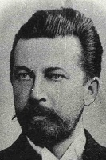
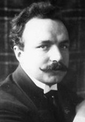
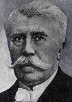
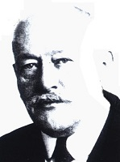
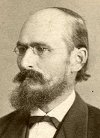
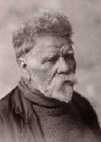
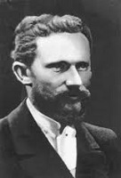
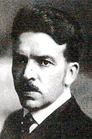
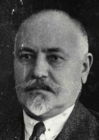

| Name Surname | Picture | Style | Biography | Notable Works |
|---|---|---|---|---|
| Mikhail Eisenstein | Art Nouveau with Russian Revival elements | (1867-1921) Russian architect who worked in Riga, Latvia during the late 19th and early 20th centuries. He is known for his contributions to the Art Nouveau movement in the city. |
Russian Orthodox Cathedral in Riga | |
| Konstantin Pekshens |  | National Romanticism | (1849-1909) Latvian architect and one of the founders of national romanticism in Riga. He played a significant role in shaping the architectural landscape of the city. Studied at Riga Polytechnical Institute (RTU). |
Riga Central Market, Latvian Society House |
| Wilhelm Bockslaff | Art Nouveau | (1858-1945) Latvian architect known for his contributions to the Art Nouveau style in Riga. Bockslaff's works display the characteristic ornamentation and expressive forms of Art Nouveau. Studied at Riga Polytechnical Institute (RTU). |
Latvian National Museum of Art, Riga City Museum, Jelgava Palace | |
| Eižens Laube |  | Art Nouveau, National Romanticism | (1867-1933) Latvian architect who worked predominantly in the Art Nouveau style. He was active during the early 20th century and contributed to the architectural landscape of Riga. Studied at Riga Polytechnical Institute (RTU). |
Riga Stock Exchange, Riga Latvian Society House |
| Johann Daniel Felsko |  | Art Nouveau | (1858-1911) Latvian architect who contributed to the Art Nouveau style in Riga. He designed several notable Art Nouveau residential buildings in the city during the late 19th and early 20th centuries. |
Several notable Art Nouveau residential buildings in Riga. |
| Friedrich Scheffel |  | Art Nouveau, National Romanticism | (1859-1931) Latvian architect known for his works in the Art Nouveau style. He designed various buildings in Riga, particularly in the city center, incorporating the characteristic elements of Art Nouveau. |
Various Art Nouveau buildings in Riga, particularly in the city center. |
| Janis Fridrihs Baumanis |  | Art Nouveau, National Romanticism | (1858-1928) Latvian architect active during the late 19th and early 20th centuries. He primarily worked in the Art Nouveau style and designed several residential buildings in Riga known for their Art Nouveau features. |
Several Art Nouveau residential buildings in Riga. |
| Heinrich Scheel | Art Nouveau | (1859-1927) Latvian architect associated with the Art Nouveau movement. He designed various buildings in Riga, often incorporating the ornate and expressive characteristics of Art Nouveau. |
Various Art Nouveau buildings in Riga. | |
| Karl Johan Felsko | - | Art Nouveau | (1857-1918) Son of Johan Daniel Felsko. Latvian architect known for his works in the Art Nouveau style. He primarily designed residential buildings in Riga during the late 19th and early 20th centuries, contributing to the city's architectural heritage. Worked in Riga Polytechnical Institute (RTU). |
Art Nouveau residential buildings in Riga. |
| Augusts Dombrovskis |  | Eclectic architectural style, Art Nouveau | (1845-1927) Latvian architect active during the late 19th and early 20th centuries. Dombrovskis contributed to the architectural landscape of Riga with his designs that incorporated elements from different styles, creating visually striking compositions. |
Latvian National Opera, Riga Russian Drama Theatre |
| Paul Mandelstam | Art Nouveau | (1872-1941) Latvian architect of Jewish descent who played a significant role in the Art Nouveau movement in Riga. He is renowned for his exceptional Art Nouveau designs, characterized by intricate ornamentation, expressive forms, and floral motifs. Studied at Riga Polytechnical Institute (RTU). |
The Mandelstam House: This building, located at Alberta iela 12 in Riga, is an iconic Art Nouveau masterpiece and one of the most renowned examples of the style in the city. | |
| Aleksandrs Vanags |  | Art Nouveau, National Romanticism | (1873-1919) Aleksandrs Vanags is one of the brightest personalities in that galaxy of Riga architects, who mainly in the 20th century. Studied at Riga Polytechnical Institute (RTU). His whole life and professional development is connected with surveying, researching and knowing the ancient and artistic monuments of his nation's garamants, it is a continuous movement and desire to reveal the spiritual and material cultural values of the Latvian nation. |
Around 60 multi-storey brick residential buildings in Riga and other populated areas of Latvia and Estonia |
| Herman Hilbig | Eclectic architectural style, Art Nouveau | (1901-1990) German architect and urban planner. Studied at Riga Polytechnical Institute (RTU). |
Elizabetes street 23 (1903.) | |
| Rudolfs Filips Donbergs |  | Eclectic architectural style, Art Nouveau | (1864-1918) Latvian architect. One of the 19th c. end and 20th century for the architects of the early Riga tenement houses, whose designed buildings are today protected immovable cultural monuments of the State. Studied at Riga Polytechnical Institute (RTU). |
According to his projects, more than 80 multi-story brick residential and public buildings were built in Riga. |
| Janis Alksnis |  | Eclectic architectural style, Art Nouveau | (1896-1939) Latvian architect. He was autodidact, and was granted a builder's license in 1901. He was then very active for a rather short period of time, coinciding with rapid economic growth in Riga. Between 1901 and the outbreak of World War I, he designed more than 130 private and public buildings in Riga, most of them in Art Nouveau style. |
Blaumaņa Street 3 and 5, Brivibas street 57, 76 and 88, Gertrude Street 30 and 34, Lāčplēša street 18, Skola Street 4,Stabu Street 19. |
| Rudolf Heinrich Zirkwitz | - | Eclectic architectural style, Art Nouveau | (1857-1926) Baltic German architect working in present-day Latvia. Apart from his work as an architect, he was also an assessor in a number of insurance companies and worked as a building inspector at the Riga City Construction Board and taught drawing at the City Gymnasium. Studied at Riga Polytechnical Institute (RTU). |
He designed around 25 multi-storey apartment buildings in Riga and also supplied the plans for Igate Manor and plans for the rebuilding of Bīriņi Palace. The buildings he designed were Eclectic, with occasional influences from Art Nouveau. |
Architects that worked specifically in National Romanticism are:
Architects that studied in Riga Polytechnical Institute (RTU):